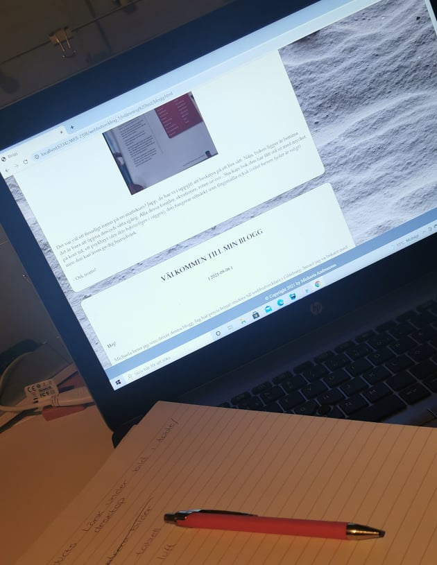

Flow en tidig morgon
∣ 2021-09-05 ∣

Godmorgon! Kände direkt igår när jag kodat klart att jag inte alls va nöjd vilket resulterade i för lite sömn. Drömma om kodning och alla taggar är inget ovanligt längre. Det är tidigt på morgonkvisten nu, en kopp te och morgonrocken så ska vi nog slå ihjäl ett par timmar innan resten av huset vaknar.
Hamnade i ett riktigt flow, dock bestämde jag mig för att ta bort allt slit och börja om från början. Panik! Va detta verkligen en smart idé att ta bort allt en vecka innan inlämning? Det återstår att se, hoppas flowet håller i sig.
ORK MATTE!
∣ 2021-09-06 ∣

Det var väl ett finurligt namn på en mattekurs? Japp, de har vi i uppgift att beskriva på ett bra sätt. Nåja, boken ligger är hemma det är bara att öppna den och sätta igång. Alla dessa formler, ekvationer, roten ur osv.. Stackars bok den har fått stå ut med mycket på kort tid, ett psykbryt (den åkte bokstavligen i väggen), den fungerar utmärkt som flugsmälla också (vilket barnen tycker är roligt) men den kan även ge dig huvudvärk.
- Ork matte!
VÄLKOMMEN TILL MIN BLOGG
∣ 2021-09-06 ∣
Hej!
Michaela heter jag som driver denna blogg. Jag har precis börjat studera till webbutvecklare i Göteborg. Senast jag va bekant med bloggar det var i tonåren för 10-15år sen när bloggar först blev populärt. Jag minns att jag följde Alexandra Nilsson (Kissie), Isabella Löwengrip (Blondinbella) och Kenza och idag är de väldigt framgångsrika kvinnor. Undra vad som hade hänt om jag hade fortsatt med mitt bloggande. Hm, bra tankeställare där. Haha.
Här kommer ni få följa min utbildning, mina framsteg och hur min vardag ser ut som student. Kombinera familjelivet med studentlivet kan vara en utmaning så räkna med ett och annat psykbryt, det lär gå ut över bloggen eller lite skryt om en bra kodning.